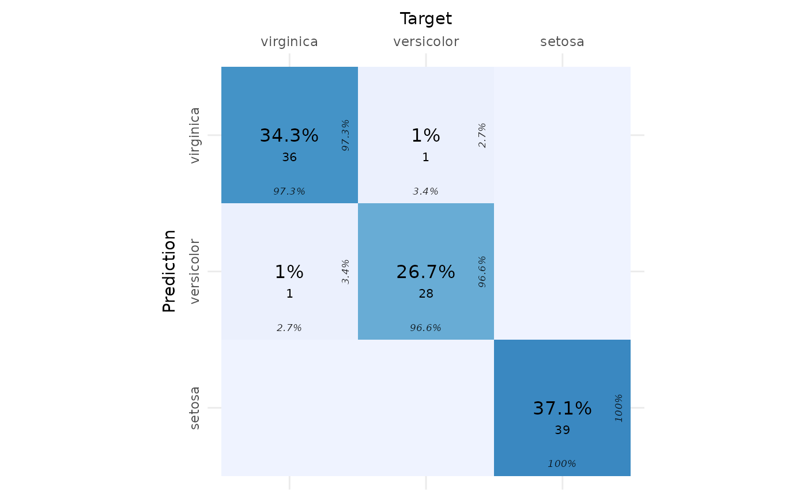
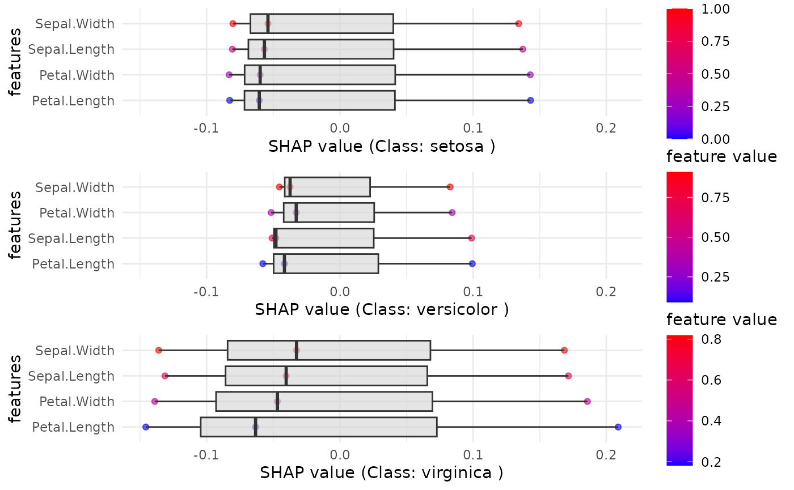

SHAP analysis in multi-class classification tasks
Ramtin Zargari Marandi
Source:vignettes/articles/explainer_tutorial_multiclass.Rmd
explainer_tutorial_multiclass.RmdLoad Required Libraries
We will begin by loading the necessary packages.
library(explainer)
library(mlbench)
library(mlr3learners)## Loading required package: mlr3##
## Attaching package: 'dplyr'## The following objects are masked from 'package:stats':
##
## filter, lag## The following objects are masked from 'package:base':
##
## intersect, setdiff, setequal, union##
## Attaching package: 'plotly'## The following object is masked from 'package:ggplot2':
##
## last_plot## The following object is masked from 'package:stats':
##
## filter## The following object is masked from 'package:graphics':
##
## layout##
## Attaching package: 'gridExtra'## The following object is masked from 'package:dplyr':
##
## combineSet Seed for Reproducibility
seed <- 246
set.seed(seed)Load and Prepare the Data
We will use the Iris dataset for this example and define the target
column (Species).
# Load the Iris dataset
data("iris")
target_col <- "Species"
# Extract relevant columns from the dataset
mydata <- irisCreate the Classification Task
We create a classification task using the mlr3
package.
maintask <- mlr3::TaskClassif$new(
id = "my_classification_task",
backend = mydata,
target = target_col
)Split the Dataset
We will split the data into training and test sets.
splits <- mlr3::partition(maintask, ratio = 0.3)Train the Model
Using the ranger algorithm, we will train a classification model.
mylrn <- mlr3::lrn("classif.ranger", predict_type = "prob")
mylrn$train(maintask, splits$train)Make Predictions
Once the model is trained, we make predictions on the test set.
# Make predictions on the test set
predictions <- mylrn$predict(maintask, splits$test)
# Convert predictions to a data frame
predicted_classes <- predictions$response
true_classes <- mydata[splits$test, target_col]Confusion Matrix
We create and visualize a confusion matrix using the
cvms package.
# Create a confusion matrix
conf_matrix <- table(True = true_classes, Predicted = predicted_classes)
# Convert the confusion matrix to a data frame with required column names
conf_matrix_df <- as.data.frame(conf_matrix)
colnames(conf_matrix_df) <- c("Target", "Prediction", "N")
# Plot the confusion matrix
plot_confusion_matrix(conf_matrix_df)## Warning in plot_confusion_matrix(conf_matrix_df): 'ggimage' is missing. Will
## not plot arrows and zero-shading.## Warning in plot_confusion_matrix(conf_matrix_df): 'rsvg' is missing. Will not
## plot arrows and zero-shading.
SHAP (SHapley Additive exPlanations) Analysis
We will now compute SHAP values for the dataset to understand the feature importance for each class.
We now use the SHAP function to generate the SHAP plots for each class and a combined plot for all classes.
SHAP_output <- eSHAP_plot_multiclass(
task = maintask,
trained_model = mylrn,
splits = splits,
sample.size = 30,
seed = seed,
subset = 0.8
)
# Display the combined SHAP plot for each class
print(SHAP_output$combined_plot)## TableGrob (3 x 1) "arrange": 3 grobs
## z cells name grob
## setosa 1 (1-1,1-1) arrange gtable[layout]
## versicolor 2 (2-2,1-1) arrange gtable[layout]
## virginica 3 (3-3,1-1) arrange gtable[layout]